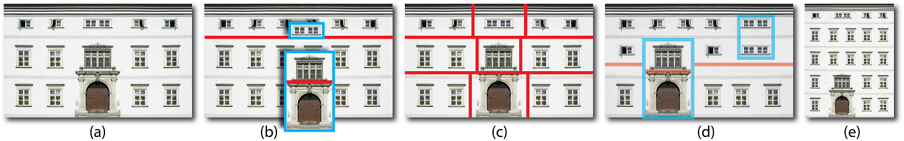
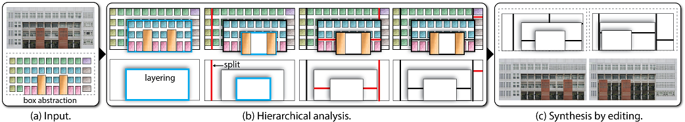
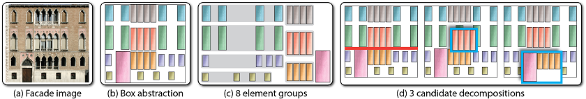
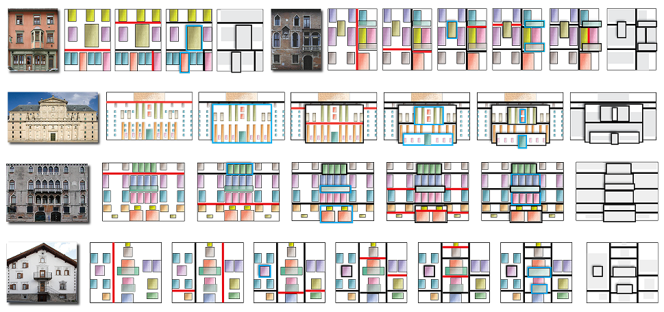
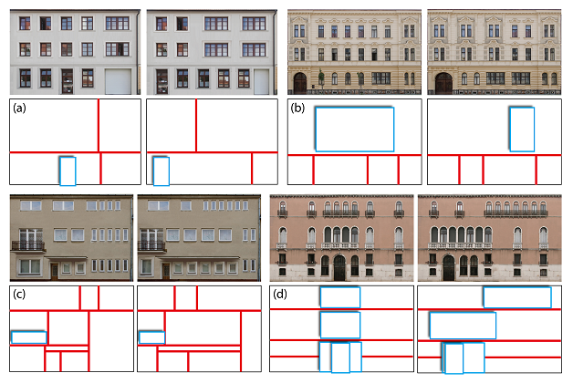
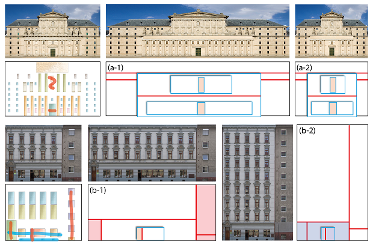
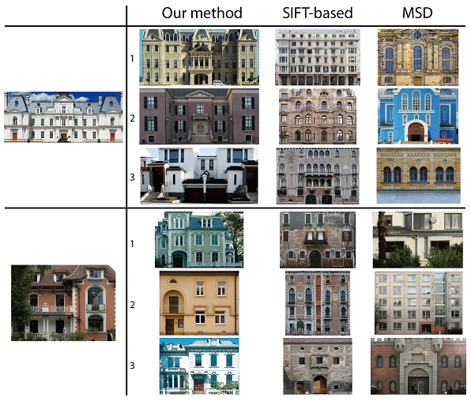
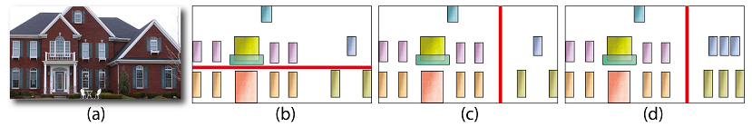

Layered Analysis of Irregular
Facades via Symmetry Maximization
Hao Zhang1,
Kai Xu2,3,
Wei Jiang3,
Jinjie Lin2, Daniel Cohen-Or4, Baoquan Chen2
1Simon
Fraser Univ., 2Shenzhen
VisuCA Key
Lab/SIAT,
3HPCL, Natl.
Univ. of
Defense Tech., 4Tev Aviv Univ.
ACM Transactions
on Graphics (SIGGRAPH 2013), 32(4)

Figure 1: Symmetry-driven
structural analysis of an irregular facade (a) results in a
hierarchical decomposition (b) into regular grids. Our analysis
introduces layering (b), going beyond flat segmentation via splits (c)
and allowing more compact and natural structural representations. The
resulting hierarchical model of facades enables applications such as
structural editing (d) and retargeting (e).
|
Abstract
|
We present an algorithm for
hierarchical and layered analysis of irregular facades, seeking a
high-level understanding of facade structures. By introducing layering
into the analysis, we no longer view a facade as a flat structure, but
allow it to be structurally separated into depth layers, enabling more
compact and natural interpretations of building facades.
Computationally, we perform a symmetry-driven search for an optimal
hierarchical decomposition defined by split and layering operations
applied to an input facade. The objective is symmetry maximization,
i.e., to maximize the sum of symmetry of the substructures resulting
from recursive decomposition. To this end, we propose a novel integral
symmetry measure, which behaves well at both ends of the symmetry
spectrum by accounting for all partial symmetries in a discrete
structure. Our analysis results in a structural representation, which
can be utilized for structural editing and exploration of building
facades.
|
|
|
Paper |
|
|
|
Slides |
|
|
|
Video |
|
|
|
| Images |

Figure
2: Overview of facade analysis and synthesis. Input to the
analysis is a box abstraction, with boxes having the same color
representing repeated basic elements of a facade, e.g., a window. Our
algorithm computes an optimal hierarchical binary decomposition (b:
top) based on splitting (dark line) and layering (shadowy box) of
facade structures enclosed by the boxes. The analysis result defines a
structural representation (b: bottom), which can be altered (c: top) to
produce interesting structural variations (c: bottom).

Figure
3: Box abstraction and decomposition candidates. A facade image
(a) is converted into a box abstraction (b), where the boxes represent
the atomic elements. Element groups (c) formed by repeated elements
(boxes in same color) in rectangular grids are identified. The four
groups on the left are incomplete and those on the right are complete.
Decomposition candidates are selected (d) and incomplete element groups
undergo structural completion (partially revealed by slightly moving
the top layer box to the side).

Figure
4: Analysis results on real-world irregular facades (left). The
right most image in each set is a collapsed view of the resulting
structural representation. The middle sequence shows the optimal
hierarchical decomposition obtained. A current split line is shown in
red and layered box in light blue border; both colors turn to black in
the next level of the hierarchy.

Figure
5:
Some facade editing results. Alteration of structural
representations and instantiated facade images are both shown.

Figure
6: Retargeting results with locking constraints (blue scribble:
vertical locking; red scribble: horizontal locking).

Figure
7: Facade retrieval results on two queries using three different
methods. Top three returns are displayed. Note that our treeto-
tree distance is invariant to left-right switching.

Figure
8: A unnatural split (b) from our analysis on an irregular
facade (a). A more natural split (c) can be obtained by placing
more emphasis on horizontal symmetry or altering the input (d).
|
|
|
| Thanks |
We would like to thank all the
reviewers for their valuable comments and feedback. Thanks should also
go to Yangyan Li and Niloy Mitra for their helpful discussions. This
work is supported in part by grants from NSERC Canada (611370), NSFC
China (61202333, 61025012 and 61232011), Guangdong Sci. and Tech.
Program (2011B050200007), Shenzhen Sci. and Inno. Program
(CXB201104220029A and KC2012JSJS0019A), CPSF (2012M520392), and the
Israel Science Foundation.
|
|
|
| Code |
We provide the C++ code of facade
analysis including a set of test data:
Source code
|
|
|
| Data |
|
|
|
| Bibtex |
@article
{zhang_sig13,
title = {Layered Analysis of Irregular Facades via
Symmetry Maximization},
author
= {Hao
Zhang and Kai
Xu and Wei Jiang and Jinjie Lin
and Daniel Cohen-Or and Baoquan Chen}
journal
= {ACM Transactions on Graphics (Proc. of SIGGRAPH 2013)},
volume
= {32},
number
= {4},
pages
= {104:1--104:10},
year
= {2013}
}
|
|